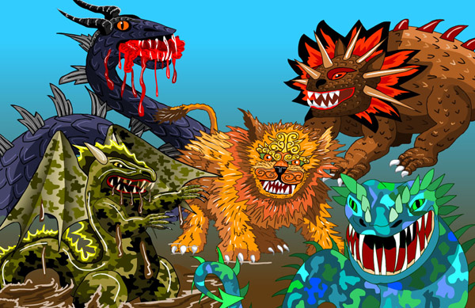
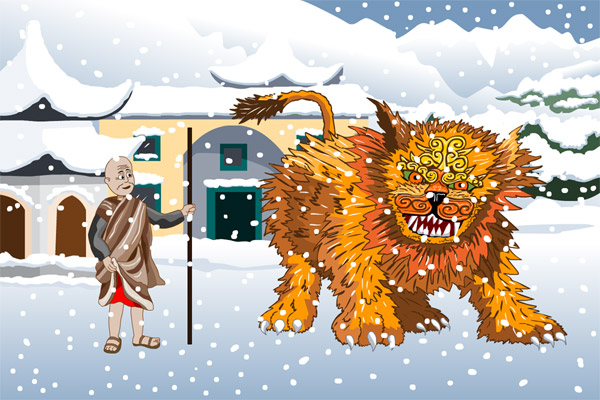
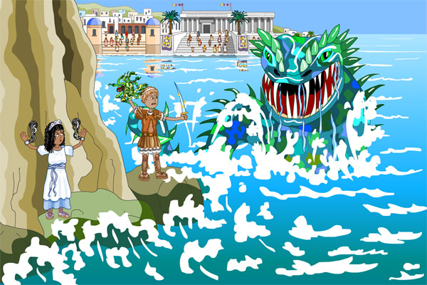
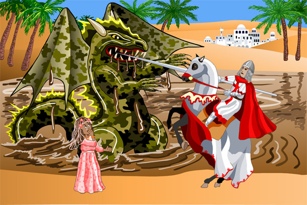
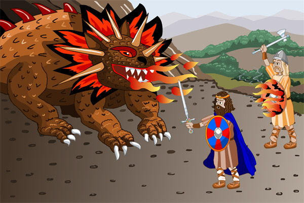
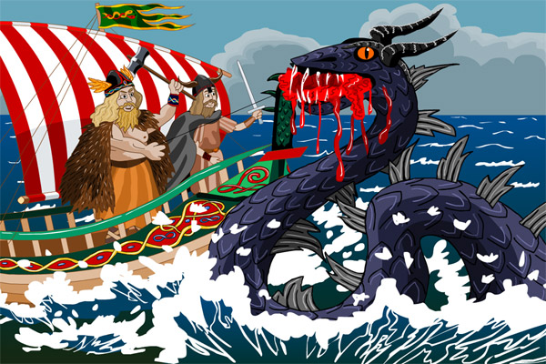

Myths and legends have existed for as long as humans have been able to speak. It is human nature to invent stories to try and explain things in the natural world that aren’t understood. Ancient stories tell how the world began, why there are mountains and oceans, why the weather changes and many more natural phenomena – all of which we now understand in more scientific ways.
In western countries, like those of Europe and Africa, stories about dragons almost always cast them as evil characters. In eastern countries, such as Japan and China, giants and monstrous beasts are the villains, whereas the dragon is a benevolent, supernatural animal that helps humans - often by controlling the forces of nature.
The following pages tell of five beasts and monsters from round the world.

The first story is from Ancient China. There was a beast named Nian who appeared every year at the end of the winter, just as springtime was about to begin. Villagers did their best to distract it from killing humans or from stealing their animals. They left out food to appease its hunger. They clashed pans and let off firecrackers to try and scare it away. But still the beast would visit, and many lives were lost.
The story tells that a wise monk called Hongjun Laozu decided to confront the beast and offer himself as a sacrifice so that it would leave the humans in peace. Nian turned on the old monk, who stripped off his cloak, ready to face his death. To his surprise, the red colour of his underclothes startled the beast and it cowered in fear. The monk shared his discovery with the villagers who pasted red paper scrolls to their windows and hung red lanterns to scare Nian away. Now, every New Year, the people of China celebrate by decorating their houses with red objects and giving young people red envelopes, usually containing money.

The next story has influenced many that followed and was probably copied from earlier tales. It is from Ancient Greek times and comes from one episode of a long story about the hero, Perseus. Perseus had special, magical gifts – sandals that helped him fly and a cap that made him invisible. After many adventures, he landed, exhausted, on a rocky island.
The people of the island were in great turmoil - their queen had offended the great sea god, Poseidon, and after months of being tormented by terrible sea storms and a man-eating sea serpent, they had begun to sacrifice their daughters to calm this evil beast. When Perseus arrived it was the turn of the king and queen’s own daughter – Princess Andromeda, and she had been tied to a rock to await her fate. Perseus calmed her and turned to face the sea serpent. In his bag, Perseus carried the head of Medusa, an evil female monster that he had killed in an earlier adventure. One look at her head would turn any living being into stone. Perseus thrust the head towards the sea serpent and, as it turned to rock, it sank to the bottom of the sea.

The story of St. George and the Dragon is told in many countries around the world. It tells of a knight who visits a town which was being threatened by a noxious dragon living in a nearby swamp. This dragon had poisonous breath and was kept from killing people by the daily sacrifice of two sheep. But, after a long drought, the sheep failed to produce enough lambs to feed both the people and the dragon.
The people realised they would have to sacrifice their daughters and one by one they were sent to the dragon. Eventually it was the turn of Princess Sadra. The knight, called George, rescued her and wounded the dragon. They led it back into town and George killed it with a magical sword. The townspeople were thankful and in awe of George – many became Christians like George, who went on to become a famous saint.

Beowulf was a great hero and king who lived in the northern part of Europe. There are many tales about his brave deeds. The story of the time he defeated a dragon was sadly to be his last adventure because he would be killed. A servant had stolen a jewelled cup from the lair of a dragon which had been terrorising the local people. This enraged the dragon, and it became more violent and dangerous.
Beowulf realised that he must put an end to this problem. He took a small group of soldiers and his young nephew, Wiglaf, to fight the dragon. But the soldiers were too afraid; they all turned and fled, leaving Beowulf and Wiglaf to battle the fire-breathing dragon alone. Beowulf was fatally wounded, but Wiglaf managed to injure the dragon enough for Beowulf to strike one more blow, killing the dragon. As Beowulf died, he passed on his kingdom to the brave Wiglaf.

Thor was a northern god who was proud and boastful. He carried a huge hammer as a weapon and controlled storms, thunder and lightning. Although fierce, he was a very popular god and many stories were told about him. A favourite tale told of the time when Thor was fishing with a giant called Hymir and captured the sea serpent, called Jörmungandr.
Thor was with Hymir in his boat, but Hymir felt they had sailed too far out to sea. They had also quarrelled over bait and Thor had killed Hymir’s ox. He was using its head as bait, determined to capture a larger fish than Hymir. To Thor’s surprise, he hooked the sea serpent and managed to pull it in until the creature rose up out of the water. At that point he cut the line and let the monster escape, much to Hymir’s relief.